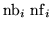

Input formatParameter definitions
SET Errors ....(maximum 80 characters)
nopt
nerr
name nint  for i from 1 to nint
...........
name nint for i from 1 to nint
The meaning of the parameters are the same as those of the SET MIS.... operation which follows. A special value of nopt : 5 , is used to read the errors sequentially from the fortran input file f007. In this case however one needs to know the order of the element parameters internal to Dimad. Please contact Lindsay Schachinger to obtain the information needed for correct use of this option.
Examples
The example comes from demo7. Just as for error data definition this operation is deactivated in demo7.
*SETERROR RANGES *3 *4 *HFOC 0 HDOC 0 HFDC 0 HDEFOC 0,